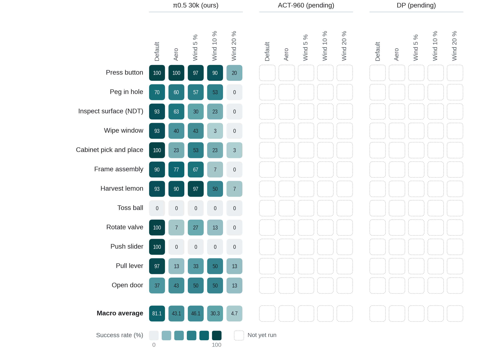

Updated 19 Nov 2026 · simulation in AM-Bench on Isaac Lab
Aerial manipulation data is scarce, but vision-language-action models already know how to use an arm. We keep one, π0.5, for the arm and train a small Flight DiT for flight. On AM-Bench's fully actuated hexarotor we fixed the scripted specialists, recorded 4,800 verified demonstrations and fine-tuned π0.5 to 81 % success with the benchmark's own evaluator (49 % in the AM-Bench paper). Three tests of the Flight DiT so far: at best it ties π0.5 alone.
π0.5 after fine-tuning: one successful rollout per task, default physics, real time. Toss ball has none: the policy carries the ball to the bin and never lets go.
Retraining a VLA on scarce flight data would spend it on what the VLA already knows. So π0.5 keeps the arm, and a small Flight DiT learns how the vehicle flies: it forecasts where the base will be and hands that to π0.5 as 11 tokens.
AM-Bench's fully actuated hexarotor with a 4-DoF arm, in Isaac Lab. We first fixed the benchmark's scripted specialists, then let them record verified demonstrations under five physics conditions.
Hover or tap to play the specialist. Badges: successes in 5 runs on default physics, AM-Bench's code → ours (44 of 60 → 60 of 60). * passes only the old check, by pushing the door; † 6 of 8 over all official runs.
All three learn from the same 960 default-physics demonstrations and are judged with one protocol, 30 rollouts per task and condition. π0.5 leads on default physics; under thrust limits and wind, which none of them saw in training, it drops the most.
| Condition | π0.5 | ACT-960 | Diffusion Policy |
|---|---|---|---|
| Default | 76.4 % | 49.7 % | 47.5 % |
| Aero | 43.6 % | 35.8 % | 50.8 % |
| Wind 5 % | 41.7 % | 31.1 % | 44.7 % |
| Wind 10 % | 32.8 % | 25.0 % | 39.2 % |
| Wind 20 % | 3.1 % | 1.1 % | 10.3 % |

π0.5 alone already succeeds in 82 % of the rollouts on default physics. Three tests have wired the Flight DiT's forecast in differently; none beats π0.5 alone yet.
| Test | Row | With the Flight DiT | π0.5 alone | Rollouts | Only with | Only without | p |
|---|---|---|---|---|---|---|---|
| Test 1 | Default | 227 | 271 | 330 | 15 | 59 | p < 0.001 |
| Test 1 | Aero | 89 | 167 | 330 | 14 | 92 | p < 0.001 |
| Test 1 | Wind 5 % | 103 | 148 | 330 | 24 | 69 | p < 0.001 |
| Test 1 | Wind 10 % | 89 | 112 | 330 | 28 | 51 | p = 0.01 |
| Test 1 | Wind 20 % | 11 | 11 | 330 | 3 | 3 | p = 1.00 |
| Test 2 | Inspect surface (NDT) | 0 | 30 | 30 | 0 | 30 | p = 2 × 10⁻⁹ |
| Test 2 | Harvest lemon | 15 | 28 | 30 | 1 | 14 | p = 0.001 |
| Test 3 | Default, π0.5 not retrained | 247 | 271 | 330 | 19 | 43 | p = 0.0032 |
| Test 3 | Default, full system | 270 | 271 | 330 | 24 | 25 | p = 1 |
| Test 3 | Wind 5 %, full system | 157 | 148 | 330 | 40 | 31 | p = 0.34 |
| Test 3 | Wind 10 %, full system | 128 | 112 | 330 | 48 | 32 | p = 0.093 |
| Task | 5 %: full system | 5 %: π0.5 alone | 10 %: full system | 10 %: π0.5 alone |
|---|---|---|---|---|
| Press button | 30 | 30 | 29 | 27 |
| Peg in hole | 23 | 19 | 22 | 17 |
| Inspect surface (NDT) | 30 | 27 | 28 | 18 |
| Wipe window | 1 | 1 | 0 | 0 |
| Cabinet pick and place | 11 | 18 | 6 | 10 |
| Frame assembly | 25 | 20 | 17 | 11 |
| Harvest lemon | 21 | 21 | 7 | 9 |
| Rotate valve | 4 | 2 | 3 | 7 |
| Push slider | 0 | 1 | 7 | 4 |
| Pull lever | 2 | 1 | 5 | 5 |
| Open door | 10 | 8 | 4 | 4 |